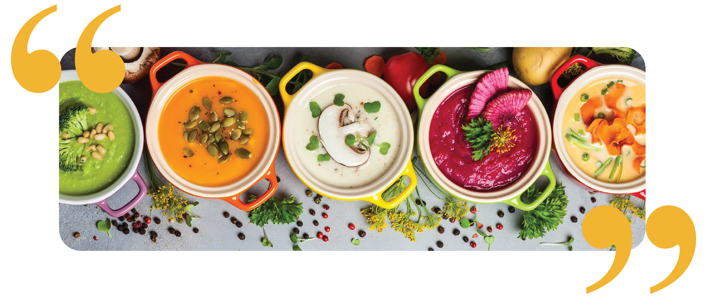

Welcome to a night of delicious soup.
Do you identify as a soup lover? are you interested in trying comfort foods from around the world?
Join me and my friends for our first ever Soup Night!
We will each bring a large pot of our favourite soup for the rest of the group to try, and together we can argue about our shared soup tier list. There will also be soup trivia, passionate discussions about the history of soup in wartime, and other fun soup-related activities. Bread sticks and crackers will be provided.